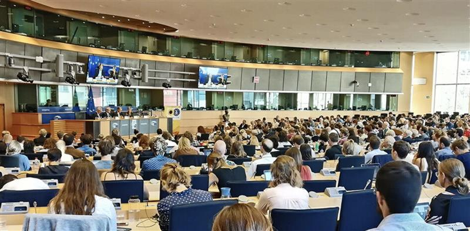
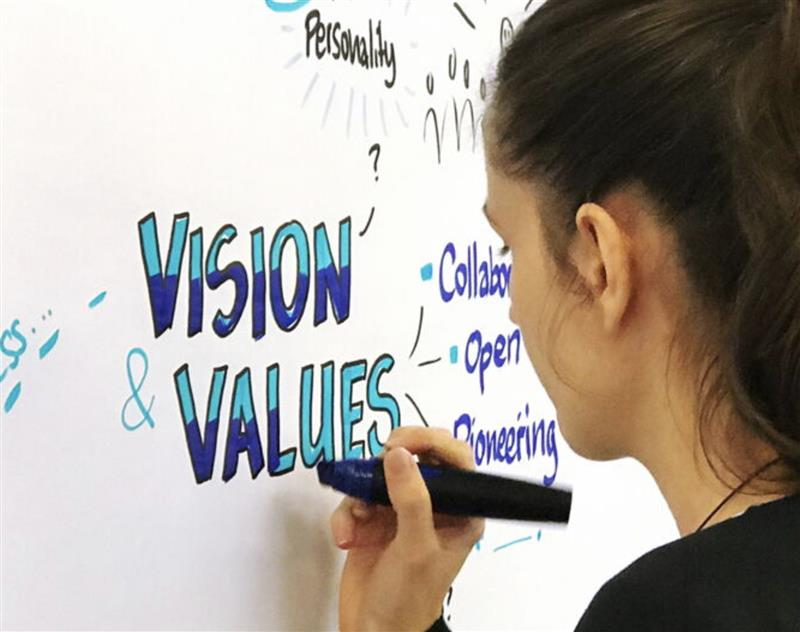

The Beyond Growth Conference is over but worth learning about in the light of our previous post from the Twitter feed of @JKSteinberger (Ed)
Beyond Growth 2023 Conference Pathways towards Sustainable Prosperity in the EU
About the Beyond Growth 2023 Conference
The Beyond Growth 2023 Conference is a multi-stakeholder event aiming to discuss and co-create policies for sustainable prosperity in Europe, based on a systemic and transformative approach to economic, social and environmental sustainability and its encompassing governance framework.
With this conference, the organisers aim to challenge conventional policy-making in the European Union and to redefine societal goals across the board, in order to move away from the harmful focus on the sole economic growth – that is, the growth of GDP – as the basis of our development model. The conference will put into practice the idea of a post-growth future-fit EU that combines social well-being and viable economic development with the respect of planetary boundaries.
This three days major event is a cross-party initiative of 20 Members of the European Parliament, supported by a wide-range of partner organisations, which follows the success of the Post-Growth 2018 conference. The conference offers an opportunity for discussion across institutional boundaries and with European citizens. It will involve stakeholders from EU and national policymaking, academia, social partners, businesses and civil society organisations. As it aims to discuss the future of European citizens, it will take place in their house, in the European Parliament (Brussels’ site) on 15-16-17 May 2023.
Goals of the conference
The organisers set the following mutually reinforcing goals for the conference:
- Discuss the significance of economic growth as a policy goal and deconstruct underlying assumptions of GDP being the only mean to achieve economic policy objectives.
- Shift the discourse towards future-oriented economic policymaking and the benefits of beyond-growth indicators for a well-being European economy.
- Shape the EU’s path to a more resilient economic agenda in line the European Green Deal objectives and the Sustainable Development Goals.
- Create real policy impact with new proposals to establish a new social, economic and environmental contract.
- Create new and unusual alliances between a great diversity of stakeholders.

Key questions
The conference will address the following guiding questions:
- What narrative is needed to guide progress towards a European Union that aims to prosper, rather than to grow?
- What policies and indicators are needed to build a society that focuses on satisfying the well-being of its citizens while respecting planetary boundaries?
- What governance structures are needed to deal with today’s interlinked environmental, social and economic challenges and ensure that all policy areas contribute to the EU’s common objectives?
- How to address inconsistencies between existing EU policies and a European post-growth economy agenda, and how to realign priorities accordingly?

Innovative approach
The Beyond Growth 2023 Conference is not just another conference.
It is about exploring new ways of thinking about economic and social progress, at the very heart of EU institutions, with EU top-level decision-makers engaging with experts from a wide diversity of backgrounds. The conference aims to focus on the interlinks of the environmental, social and economic challenges at hand rather than discussing them in silos.
Through an approach that builds on high-level discussions (accessible to all) combined with co-creative policy labs (upon invite only), the participants will not only gain new insights. They will also elaborate feasible options for a society centered onresilience, meaning, fairness and sustainability.
The conference also aims to build bridges among a wide range of stakeholders. Too often, citizens, the scientific world, civil society organisations and decision-makers talk past each other. With the Beyond Growth conference, we hope to provide a place for mutual understanding.
The conference is entirely free, to make it more accessible for anyone interested in this important discussion about our common future. For those who did not register on time or cannot join us in Brussels, every panel will be broadcasted live on this website. We still hope to meet most of you in the Parliament so that we can all benefit most from real-life interactions. Informal moments matter, and speakers will be available to meet you.
The conference also relies on participative methods to allow the audience to actively engage and interact with the speakers. A graphic recorder will be translating discussions into drawing in real time. A visual timeline will allow participants to engage and provide their feedback. Side events and a closing drink will be proposed so that people can keep up the discussion in more informal settings.
SOURCE: BEYOND GROWTH 2023